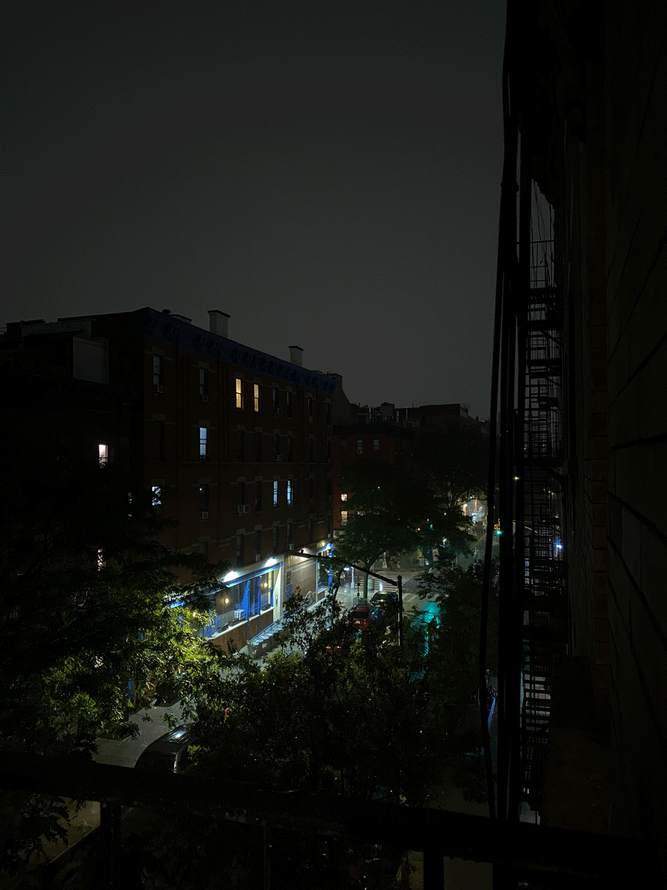

A Rainy Walk - September 22
A rainy Thursday. It was pouring rain as I was heading to school this morning. I left at 12, took the bus, and arrived at my destination at 12:20. 'The Diamond Sea' had a cozy feeling, perfect for walking in the rain.
Diamond Sea - Radio Edit
♪
I wonder how it came to be my friend,
That someone just like you has come again
You'll never, never know how close you came
Until you fall in love with the diamond rain
♪
